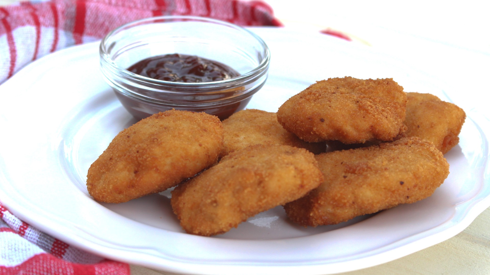

Receta para 12 unidades
|
 |
Elaboración
- Colocar las rodajas de pan de molde en la leche.
- Colocar el pollo en la procesadora y procesar hasta que esté hecho una pasta que será la base del relleno.
- Agregar al pollo en la procesadora el queso crema, los panes remojados en leche escurridos, sal y pimienta. Volver a procesar. Nos quedará una pasta más consistente.
- Formar con esta pasta los nuggets de pollo: primero bolitas. El secreto para que las bolitas no se queden pegadas en las manos es tener las manos levemente mojadas con agua. Luego pasamos estas bolitas por harina y las aplastamos, quedando la forma de los nuggets.
- Pasar los nuggets de pollo por huevo y luego por pan rallado.
- Freír en aceite bien caliente hasta que estén doradas de ambos lados. También pueden hacerse al horno, con un poco de aceite debajo.